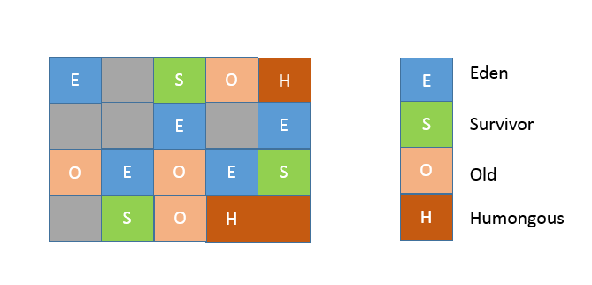
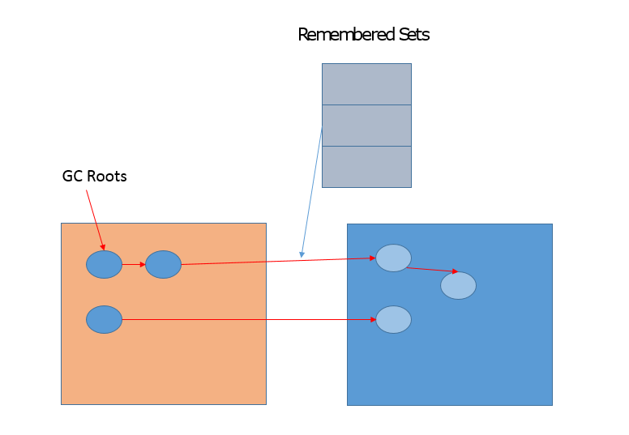

第28讲 | 谈谈你的GC调优思路?
我发现，目前不少外部资料对 G1 的介绍大多还停留在 JDK 7 或更早期的实现，很多结论已经存在较大偏差，甚至一些过去的 GC 选项已经不再推荐使用。所以，今天我会选取新版 JDK 中的默认 G1 GC 作为重点进行详解，并且我会从调优实践的角度，分析典型场景和调优思路。下面我们一起来更新下这方面的知识。
今天我要问你的问题是，谈谈你的 GC 调优思路？
典型回答
谈到调优，这一定是针对特定场景、特定目的的事情， 对于 GC 调优来说，首先就需要清楚调优的目标是什么？从性能的角度看，通常关注三个方面，内存占用（footprint）、延时（latency）和吞吐量（throughput），大多数情况下调优会侧重于其中一个或者两个方面的目标，很少有情况可以兼顾三个不同的角度。当然，除了上面通常的三个方面，也可能需要考虑其他 GC 相关的场景，例如，OOM 也可能与不合理的 GC 相关参数有关；或者，应用启动速度方面的需求，GC 也会是个考虑的方面。
基本的调优思路可以总结为：
- 理解应用需求和问题，确定调优目标。假设，我们开发了一个应用服务，但发现偶尔会出现性能抖动，出现较长的服务停顿。评估用户可接受的响应时间和业务量，将目标简化为，希望 GC 暂停尽量控制在 200ms 以内，并且保证一定标准的吞吐量。
- 掌握 JVM 和 GC 的状态，定位具体的问题，确定真的有 GC 调优的必要。具体有很多方法，比如，通过 jstat 等工具查看 GC 等相关状态，可以开启 GC 日志，或者是利用操作系统提供的诊断工具等。例如，通过追踪 GC 日志，就可以查找是不是 GC 在特定时间发生了长时间的暂停，进而导致了应用响应不及时。
- 这里需要思考，选择的 GC 类型是否符合我们的应用特征，如果是，具体问题表现在哪里，是 Minor GC 过长，还是 Mixed GC 等出现异常停顿情况；如果不是，考虑切换到什么类型，如 CMS 和 G1 都是更侧重于低延迟的 GC 选项。
- 通过分析确定具体调整的参数或者软硬件配置。
- 验证是否达到调优目标，如果达到目标，即可以考虑结束调优；否则，重复完成分析、调整、验证这个过程。
考点分析
今天考察的 GC 调优问题是 JVM 调优的一个基础方面，很多 JVM 调优需求，最终都会落实在 GC 调优上或者与其相关，我提供的是一个常见的思路。
真正快速定位和解决具体问题，还是需要对 JVM 和 GC 知识的掌握，以及实际调优经验的总结，有的时候甚至是源自经验积累的直觉判断。面试官可能会继续问项目中遇到的真实问题，如果你能清楚、简要地介绍其上下文，然后将诊断思路和调优实践过程表述出来，会是个很好的加分项。
专栏虽然无法提供具体的项目经验，但是可以帮助你掌握常见的调优思路和手段，这不管是面试还是在实际工作中都是很有帮助的。另外，我会还会从下面不同角度进行补充：
- 上一讲中我已经谈到，涉及具体的 GC 类型，JVM 的实际表现要更加复杂。目前，G1 已经成为新版 JDK 的默认选择，所以值得你去深入理解。
- 因为 G1 GC 一直处在快速发展之中，我会侧重它的演进变化，尤其是行为和配置相关的变化。并且，同样是因为 JVM 的快速发展，即使是收集 GC 日志等方面也发生了较大改进，这也是为什么我在上一讲留给你的思考题是有关日志相关选项，看完讲解相信你会很惊讶。
- 从 GC 调优实践的角度，理解通用问题的调优思路和手段。
知识扩展
首先，先来整体了解一下 G1 GC 的内部结构和主要机制。
从内存区域的角度，G1 同样存在着年代的概念，但是与我前面介绍的内存结构很不一样，其内部是类似棋盘状的一个个 region 组成，请参考下面的示意图。 
region 的大小是一致的，数值是在 1M 到 32M 字节之间的一个 2 的幂值数，JVM 会尽量划分 2048 个左右、同等大小的 region，这点可以从源码heapRegionBounds.hpp中看到。当然这个数字既可以手动调整，G1 也会根据堆大小自动进行调整。
在 G1 实现中，年代是个逻辑概念，具体体现在，一部分 region 是作为 Eden，一部分作为 Survivor，除了意料之中的 Old region，G1 会将超过 region 50% 大小的对象（在应用中，通常是 byte 或 char 数组）归类为 Humongous 对象，并放置在相应的 region 中。逻辑上，Humongous region 算是老年代的一部分，因为复制这样的大对象是很昂贵的操作，并不适合新生代 GC 的复制算法。
你可以思考下 region 设计有什么副作用？
例如，region 大小和大对象很难保证一致，这会导致空间的浪费。不知道你有没有注意到，我的示意图中有的区域是 Humongous 颜色，但没有用名称标记，这是为了表示，特别大的对象是可能占用超过一个 region 的。并且，region 太小不合适，会令你在分配大对象时更难找到连续空间，这是一个长久存在的情况，请参考OpenJDK 社区的讨论。这本质也可以看作是 JVM 的 bug，尽管解决办法也非常简单，直接设置较大的 region 大小，参数如下：
-XX:G1HeapRegionSize=<N, 例如 16>M
从 GC 算法的角度，G1 选择的是复合算法，可以简化理解为：
- 在新生代，G1 采用的仍然是并行的复制算法，所以同样会发生 Stop-The-World 的暂停。
- 在老年代，大部分情况下都是并发标记，而整理（Compact）则是和新生代 GC 时捎带进行，并且不是整体性的整理，而是增量进行的。
我在上一讲曾经介绍过，习惯上人们喜欢把新生代 GC（Young GC）叫作 Minor GC，老年代 GC 叫作 Major GC，区别于整体性的 Full GC。但是现代 GC 中，这种概念已经不再准确，对于 G1 来说：
- Minor GC 仍然存在，虽然具体过程会有区别，会涉及 Remembered Set 等相关处理。
- 老年代回收，则是依靠 Mixed GC。并发标记结束后，JVM 就有足够的信息进行垃圾收集，Mixed GC 不仅同时会清理 Eden、Survivor 区域，而且还会清理部分 Old 区域。可以通过设置下面的参数，指定触发阈值，并且设定最多被包含在一次 Mixed GC 中的 region 比例。
–XX:G1MixedGCLiveThresholdPercent
–XX:G1OldCSetRegionThresholdPercent
从 G1 内部运行的角度，下面的示意图描述了 G1 正常运行时的状态流转变化，当然，在发生逃逸失败等情况下，就会触发 Full GC。
G1 相关概念非常多，有一个重点就是 Remembered Set，用于记录和维护 region 之间对象的引用关系。为什么需要这么做呢？试想，新生代 GC 是复制算法，也就是说，类似对象从 Eden 或者 Survivor 到 to 区域的“移动”，其实是“复制”，本质上是一个新的对象。在这个过程中，需要必须保证老年代到新生代的跨区引用仍然有效。下面的示意图说明了相关设计。 
G1 的很多开销都是源自 Remembered Set，例如，它通常约占用 Heap 大小的 20% 或更高，这可是非常可观的比例。并且，我们进行对象复制的时候，因为需要扫描和更改 Card Table 的信息，这个速度影响了复制的速度，进而影响暂停时间。
描述 G1 内部的资料很多，我就不重复了，如果你想了解更多内部结构和算法等，我建议参考一些具体的介绍，书籍方面我推荐 Charlie Hunt 等撰写的《Java Performance Companion》。
接下来，我介绍下大家可能还不了解的 G1 行为变化，它们在一定程度上解决了专栏其他讲中提到的部分困扰，如类型卸载不及时的问题。
- 上面提到了 Humongous 对象的分配和回收，这是很多内存问题的来源，Humongous region 作为老年代的一部分，通常认为它会在并发标记结束后才进行回收，但是在新版 G1 中，Humongous 对象回收采取了更加激进的策略。 我们知道 G1 记录了老年代 region 间对象引用，Humongous 对象数量有限，所以能够快速的知道是否有老年代对象引用它。如果没有，能够阻止它被回收的唯一可能，就是新生代是否有对象引用了它，但这个信息是可以在 Young GC 时就知道的，所以完全可以在 Young GC 中就进行 Humongous 对象的回收，不用像其他老年代对象那样，等待并发标记结束。
- 我在专栏第 5 讲，提到了在 8u20 以后字符串排重的特性，在垃圾收集过程中，G1 会把新创建的字符串对象放入队列中，然后在 Young GC 之后，并发地（不会 STW）将内部数据（char 数组，JDK 9 以后是 byte 数组）一致的字符串进行排重，也就是将其引用同一个数组。你可以使用下面参数激活：
-XX:+UseStringDeduplication
注意，这种排重虽然可以节省不少内存空间，但这种并发操作会占用一些 CPU 资源，也会导致 Young GC 稍微变慢。
- 类型卸载是个长期困扰一些 Java 应用的问题，在专栏第 25 讲中，我介绍了一个类只有当加载它的自定义类加载器被回收后，才能被卸载。元数据区替换了永久代之后有所改善，但还是可能出现问题。
G1 的类型卸载有什么改进吗？很多资料中都谈到，G1 只有在发生 Full GC 时才进行类型卸载，但这显然不是我们想要的。你可以加上下面的参数查看类型卸载：
-XX:+TraceClassUnloading
幸好现代的 G1 已经不是如此了，8u40 以后，G1 增加并默认开启下面的选项：
-XX:+ClassUnloadingWithConcurrentMark
也就是说，在并发标记阶段结束后，JVM 即进行类型卸载。
- 我们知道老年代对象回收，基本要等待并发标记结束。这意味着，如果并发标记结束不及时，导致堆已满，但老年代空间还没完成回收，就会触发 Full GC，所以触发并发标记的时机很重要。早期的 G1 调优中，通常会设置下面参数，但是很难给出一个普适的数值，往往要根据实际运行结果调整
-XX:InitiatingHeapOccupancyPercent
在 JDK 9 之后的 G1 实现中，这种调整需求会少很多，因为 JVM 只会将该参数作为初始值，会在运行时进行采样，获取统计数据，然后据此动态调整并发标记启动时机。对应的 JVM 参数如下，默认已经开启：
-XX:+G1UseAdaptiveIHOP
- 在现有的资料中，大多指出 G1 的 Full GC 是最差劲的单线程串行 GC。其实，如果采用的是最新的 JDK，你会发现 Full GC 也是并行进行的了，在通用场景中的表现还优于 Parallel GC 的 Full GC 实现。
当然，还有很多其他的改变，比如更快的 Card Table 扫描等，这里不再展开介绍，因为它们并不带来行为的变化，基本不影响调优选择。
前面介绍了 G1 的内部机制，并且穿插了部分调优建议，下面从整体上给出一些调优的建议。
首先，建议尽量升级到较新的 JDK 版本，从上面介绍的改进就可以看到，很多人们常常讨论的问题，其实升级 JDK 就可以解决了。
第二，掌握 GC 调优信息收集途径。掌握尽量全面、详细、准确的信息，是各种调优的基础，不仅仅是 GC 调优。我们来看看打开 GC 日志，这似乎是很简单的事情，可是你确定真的掌握了吗？
除了常用的两个选项，
-XX:+PrintGCDetails
-XX:+PrintGCDateStamps
还有一些非常有用的日志选项，很多特定问题的诊断都是要依赖这些选项：
-XX:+PrintAdaptiveSizePolicy // 打印 G1 Ergonomics 相关信息
我们知道 GC 内部一些行为是适应性的触发的，利用 PrintAdaptiveSizePolicy，我们就可以知道为什么 JVM 做出了一些可能我们不希望发生的动作。例如，G1 调优的一个基本建议就是避免进行大量的 Humongous 对象分配，如果 Ergonomics 信息说明发生了这一点，那么就可以考虑要么增大堆的大小，要么直接将 region 大小提高。
如果是怀疑出现引用清理不及时的情况，则可以打开下面选项，掌握到底是哪里出现了堆积。
-XX:+PrintReferenceGC
另外，建议开启选项下面的选项进行并行引用处理。
-XX:+ParallelRefProcEnabled
需要注意的一点是，JDK 9 中 JVM 和 GC 日志机构进行了重构，其实我前面提到的PrintGCDetails 已经被标记为废弃，而PrintGCDateStamps 已经被移除，指定它会导致 JVM 无法启动。可以使用下面的命令查询新的配置参数。
java -Xlog:help
最后，来看一些通用实践，理解了我前面介绍的内部结构和机制，很多结论就一目了然了，例如：
- 如果发现 Young GC 非常耗时，这很可能就是因为新生代太大了，我们可以考虑减小新生代的最小比例。
-XX:G1NewSizePercent
降低其最大值同样对降低 Young GC 延迟有帮助。
-XX:G1MaxNewSizePercent
如果我们直接为 G1 设置较小的延迟目标值，也会起到减小新生代的效果，虽然会影响吞吐量。
- 如果是 Mixed GC 延迟较长，我们应该怎么做呢？
还记得前面说的，部分 Old region 会被包含进 Mixed GC，减少一次处理的 region 个数，就是个直接的选择之一。 我在上面已经介绍了 G1OldCSetRegionThresholdPercent 控制其最大值，还可以利用下面参数提高 Mixed GC 的个数，当前默认值是 8，Mixed GC 数量增多，意味着每次被包含的 region 减少。
-XX:G1MixedGCCountTarget
今天的内容算是抛砖引玉，更多内容你可以参考G1 调优指南等，远不是几句话可以囊括的。需要注意的是，也要避免过度调优，G1 对大堆非常友好，其运行机制也需要浪费一定的空间，有时候稍微多给堆一些空间，比进行苛刻的调优更加实用。
今天我梳理了基本的 GC 调优思路，并对 G1 内部结构以及最新的行为变化进行了详解。总的来说，G1 的调优相对简单、直观，因为可以直接设定暂停时间等目标，并且其内部引入了各种智能的自适应机制，希望这一切的努力，能够让你在日常应用开发时更加高效。
一课一练
关于今天我们讨论的题目你做到心中有数了吗？今天的思考题是，定位 Full GC 发生的原因，有哪些方式？